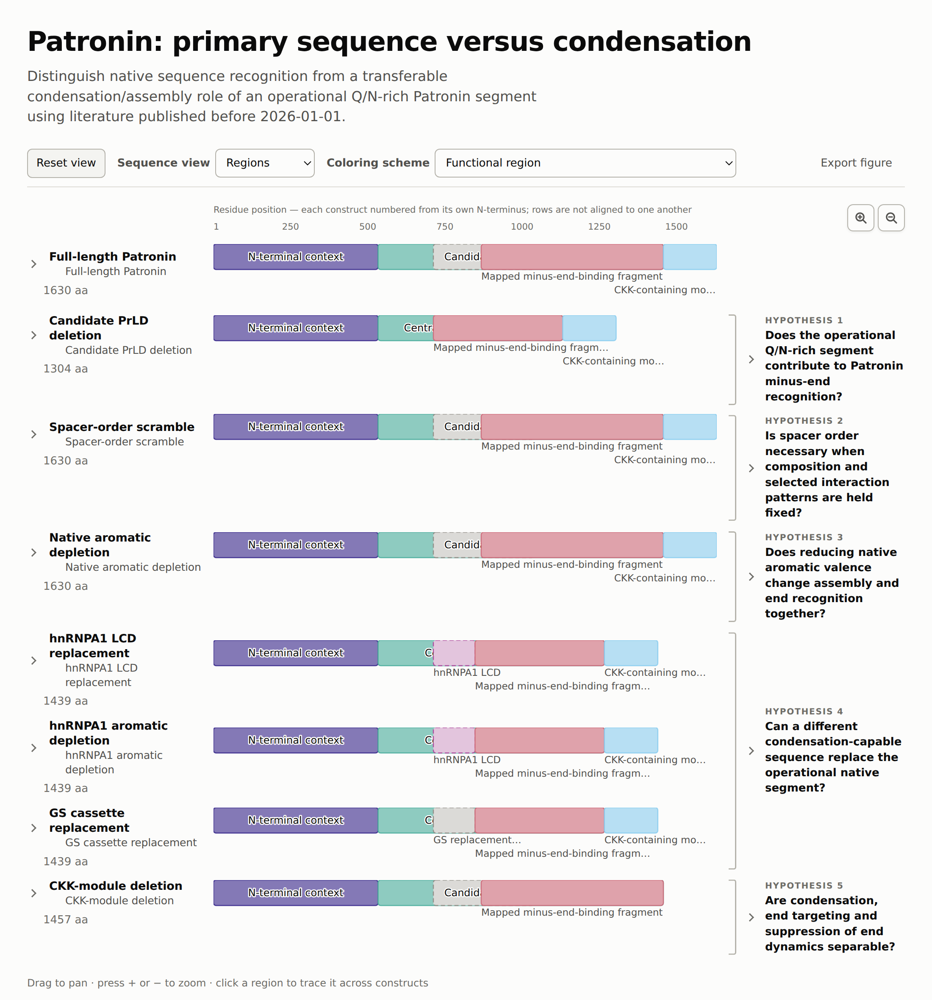
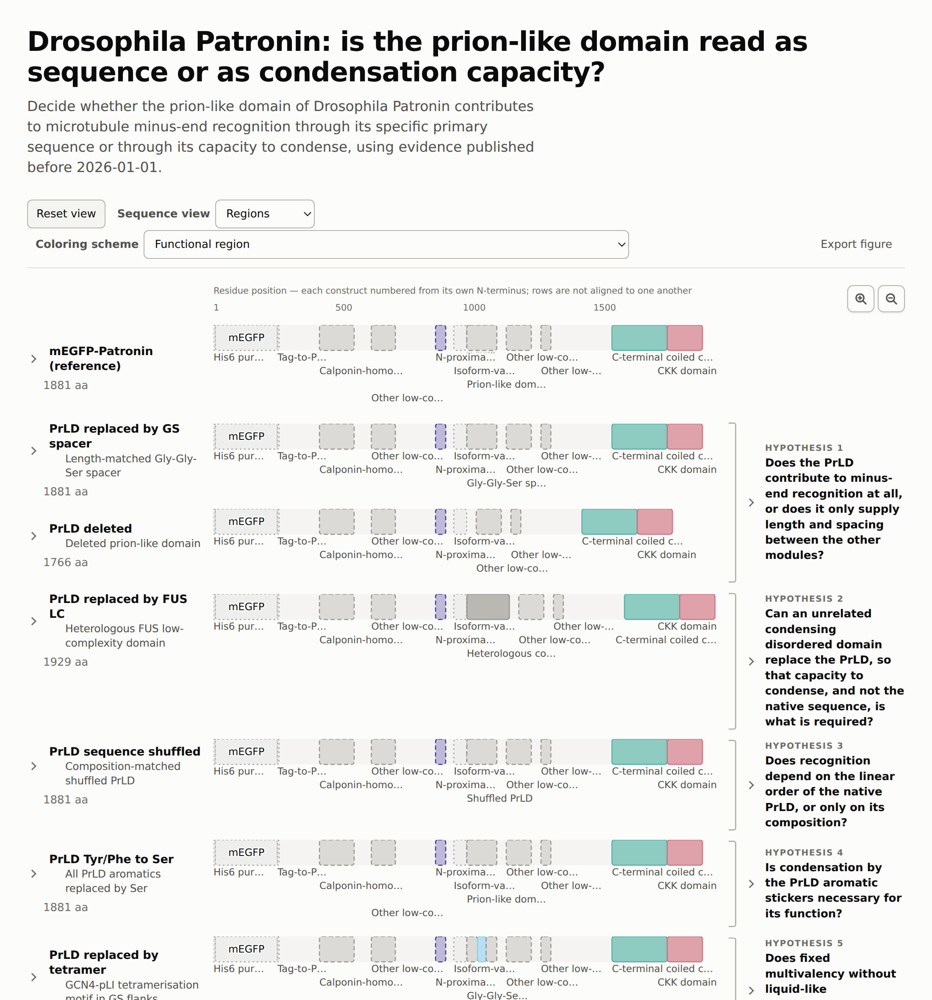

GPT 6.1 sol (high)
8 constructs (3 candidates, 4 controls, 1 reference) · 5 hypotheses · 7 cited sources, 5 checked against their identifiers
Construct Maps / Patronin: sequence or condensation?
Does the prion-like domain of Drosophila Patronin recognize microtubule minus ends through its primary sequence or through its capacity to condense?
Design a library of Drosophila Patronin (UniProt A1ZAU8) constructs to test whether its prion-like domain recognizes microtubule minus ends through its primary sequence or through its capacity to condense. Only use literature published before 2026-01-01.
Zhang B, Yang J, Yu S, Zhou K, He L, Huang L, Liang X, Wang H, Chen J. Patronin condensation integrates recognition, protection and organization of microtubule minus ends. bioRxiv, posted 6 October 2026. 10.64898/2026.10.03.756418
| Tested in the paper | GPT 6.1 sol (high) | Claude Sonnet 5.5 (high) |
|---|---|---|
| The prion-like domain deleted (ΔPrLD)Fig. 3D; Fig. 1L | Same edit deltaits domain is residues 713–1038 | Same edit d-prldits domain is residues 721–835 |
| All 23 aromatic residues of the domain changed to serine (YFW23S)Fig. 3 (the 23 aromatic stickers are marked); Fig. 3H–L | Same edit native-aro22 aromatic residues (Y, F, W) in its domain | Related aro-ser14 residues, tyrosine and phenylalanine only |
| The domain replaced by the disordered region of HNRNPA1 (Patronin–HNRNPA1)Fig. 3G, P, Q; Fig. 7C, D | Same edit a1-swap | Related fus-lcthe FUS low-complexity domain instead |
| The CKK domain deleted (ΔCKK)Fig. 6A | Same edit delta-ckkresidues 1458–1630 | Not proposed |
| PrLD with CKK, and CKK on its ownFig. 4I, J (CKK alone); Fig. 4K, L (PrLD-CKK) | Not proposed | Not proposed |
| Tyrosines changed to tryptophans in the domain (Y16W)Fig. 3M–O | Not proposed | Not proposed |
| An optogenetic PrLD, with and without YFW23SFig. 4D–H | Not proposed | Not proposed |
✓ the same edit · ~ related, a different change at the same place or the same idea · – not proposed. Constructs are named as in each library's record.

8 constructs (3 candidates, 4 controls, 1 reference) · 5 hypotheses · 7 cited sources, 5 checked against their identifiers

7 constructs (5 candidates, 1 control, 1 reference) · 5 hypotheses · 16 cited sources, 16 checked against their identifiers